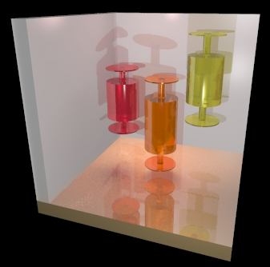

TABLE OF CONTENTS
ScPovPlot3D/BoxWhisk.inc [ Modules ]
PURPOSE
Old. well known macro for drawing 3D Box & Whiskers plot

Fig.[BoxWhisk] Box & whiskers plots There is a lot TODO: some automation and so on
********************************************************* ** Tested on PovRay 3.7 ** ** License: GNU GPL ** ** Homepage: http://scpovplot3d.sourceforge.net ** ********************************************************* ** version: 3.0.6 (& have a nice time ;) ** *********************************************************AUTHOR
Janusz Opi쓰 Ph.D.
jmo@agh.edu.pl, janusz.opila@gmail.com Dept. of Applied Informatics AGH University of Science & Technology, Cracow, Poland Maintained by Janusz Opi쓰 Ph.D.COPYRIGHT
GNU GPL v.3 License (c) 2012-now by Janusz Opi쓰 Ph.D. AGH University of Science and Technology
BoxWhisk.inc/AddBoxWhisker() [ Main macros ]
[ Top ] [ BoxWhisk.inc ] [ Main macros ]
PURPOSE
Adds final barrel to the chart and sets several parameters
SYNOPSIS
AddBoxWhisker(Y0, Y1, Mid, Rad, Tex)INPUTS
Barrel is created centered on z=0 then moved vertically to 'Mid' value Y0 - barrel vertical size (ex. median, ) Y1 - plates position (ex. confidence range) Mid - value for the center (ex. mean) Rad - radius of the barrel Tex - identifier of valid textureSEE ALSO
Buble() BoxWhisk()
BoxWhisk.inc/AddBasePlates() [ Helper macros ]
[ Top ] [ BoxWhisk.inc ] [ Helper macros ]
PURPOSE
Adds coord system stub
SYNOPSIS
AddBasePlates(D)INPUTS
D - width of coord system platesSEE ALSO
BoxWhisk.inc/AddPlates() [ Helper macros ]
[ Top ] [ BoxWhisk.inc ] [ Helper macros ]
PURPOSE
Adds coord system stub
SYNOPSIS
AddBasePlates(_D, _T, _I)INPUTS
_D - width of coord system platesSEE ALSO
BoxWhisk.inc/BoxAndWhisk() [ Helper macros ]
[ Top ] [ BoxWhisk.inc ] [ Helper macros ]
PURPOSE
Draws single barrel with plates
SYNOPSIS
BoxAndWhisk(Y0, Y1, Rad)INPUTS
Barrel is created centered on z=0 Y0 - barrel vertical size (ex. median, ) Y1 - plates position (ex. confidence range) Rad - radius of the barrelSEE ALSO
BoxWhisk.inc/Buble() [ Helper macros ]
[ Top ] [ BoxWhisk.inc ] [ Helper macros ]
PURPOSE
Draws sphere as a hole in center of the barrel
SYNOPSIS
Buble(X0, Y0, Z0, R)INPUTS
X0, Y0, Z0 - center of the sphere R - radiusSEE ALSO